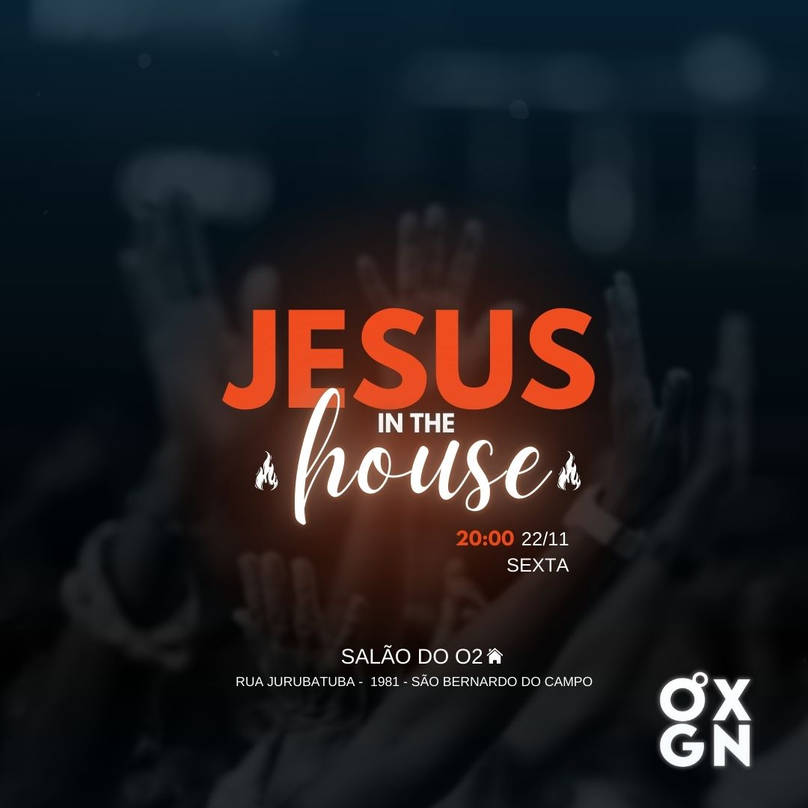
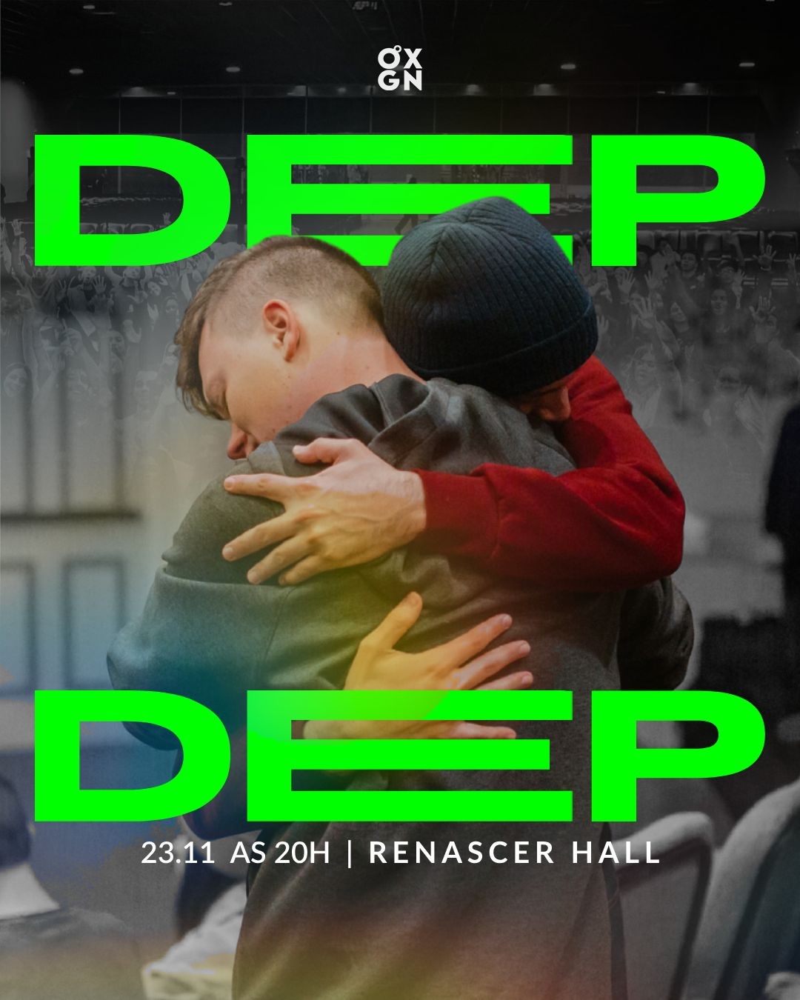

.svg)
EVENTO DA SEMANA
DESCRIÇÃO DO EVENTO
É com grande alegria e entusiasmo que convidamos você para um evento especial em nossa igreja, que será realizado na próxima SEXTA-FEIRA, às 20:00. Este é um evento único, que não acontece com frequência e tem como objetivo fortalecer nossa fé, promover a união entre os membros da comunidade e proporcionar um momento de renovação espiritual para todos.A Jesus in the House será uma oportunidade preciosa para aprofundarmos nossa caminhada cristã, com palestras inspiradoras, momentos de oração e louvor, além de atividades que visam fortalecer os laços de amizade e fraternidade entre todos. Sabemos que eventos como este são raros, e por isso sua presença é ainda mais importante. A comunhão e o aprendizado que vivenciaremos juntos serão de grande valor para cada um de nós.Convidamos você a trazer um amigo, um familiar ou um vizinho para esse evento. Compartilhar este momento com alguém especial pode fazer toda a diferença em sua vida espiritual. Lembre-se: a presença de cada um de vocês faz toda a diferença para que este evento seja verdadeiramente inesquecível. Contamos com você e sua amizade para fazer deste momento um marco em nossa igreja.
PRÓXIMOS EVENTOS
Para mais informações, acesse a agenda!